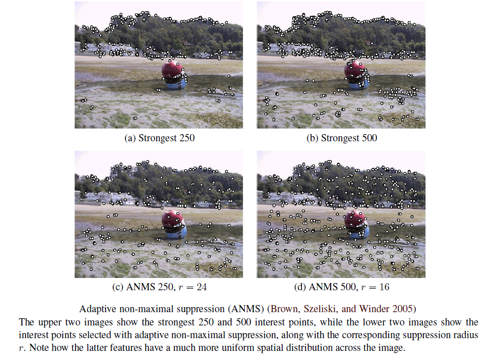
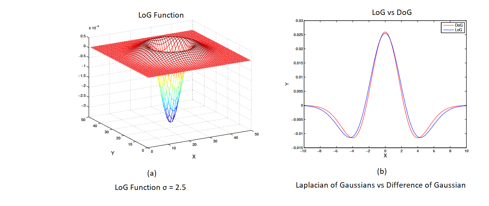
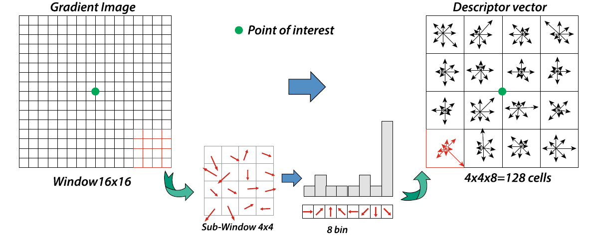
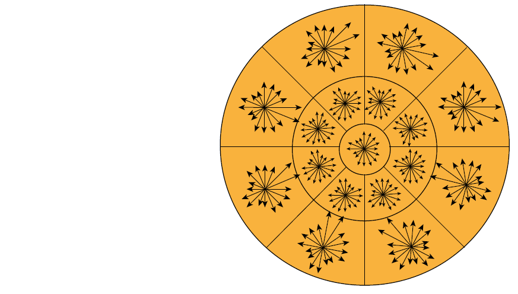
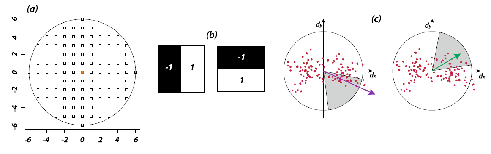

Date: 13th May 2022
Keypoint Feature Detection and Matching can be divided into four stages:
Feature Detection where each image is searched for locations that are likely to match in other images.
Then, Feature Description where each region around detection keypoint locations is converted into a more compact and stable (invariant) descriptor that can be matched against other descriptors.
Feature Matching, afterwards, efficiently searches for likely matching candidates in other images.
Lastly, Feature Tracking. It only seaches a small neighbourhood around each detected feature. Sutiable for video processing.
One of the simplest matching creteria for two image patches is their weighted squared summed difference, WSSD :
`E_(WSSD)(u) = \sum_{i}w(x_(i))[I_(1)(x_(i) + u) - I_(0)(x_(i))]^2`
where `I_(0)` and `I_(1)` are the two images being compared, `u = (u,v)` is the displacement vector, w(x) is a spatially varying weighting function, and the summation `i` is over all the pixels in the patch.
With this method, as we do not know which other image locations the feature will end up being matched up against, it is suitable to compare it small variation in position `Δu` by comparing an image patch against itself, this is known as auto-correlation function or surface
`E_(AC)(Δu) = \sum_{i}w(x_(i))[I_(0)(x_(i) + Δu) - I_(0)(x_(i))]^2` ...eq(1)
Using a Taylor-Series expansion of the image function, `I_(0)(x_(i) + Δu) ≈ I_(0)(x_(i)) + ∇ I_(0)(x_(i)) ⋅Δu`, the auto-correlation function from eq(1) can be approximated as :
`E_(AC)(Δu) = \sum_{i}w(x_(i))[I_(0)(x_(i) + Δu) - I_(0)(x_(i))]^2`
`≈ \sum_{i}w(x_(i))[I_(0)(x_(i)) + ∇I_(0)(x_(i)) ⋅ Δu - I_(0)(x_(i))]^2`
`= \sum_{i}w(x_(i))[∇I_(0)(x_(i))⋅ Δu]^2` .... eq(2)
`=Δu^T A Δu` ...eq(3)
where,
`∇ I_(0)(x_(i)) = (\frac{∂I_(0)}{∂x},\frac{∂I_(0)}{∂x})(x_(i))` is the image gradient at `x_(i)`.
This gradient can be computed using a variery of techniques. The classic "Harris" detector uses a [-2 -1 0 1 2] filter, but modern variants convolve the image with horizontal and vertical derivatives of a Guassian (typically with `σ=1`).
The auto correlation matrix `A` in eq(3) thus can be written as :
`A = w∗ [{:(\ \ \ \ I_x^2),(\ \ \ \ I_x I_y):} {:(\ \ \ \ I_x I_y),(\ \ \ \ I_x^2):}]` ...eq(4)
here, we replaced weighted summation with discrete convolution in eq(2) with weighting kernel `w` which when convolved with the outer product of the gradients `∇I` provides us a per-pixel estimate of the local shape of auto-correlation function.
Forstner-Harris :
The inverse of matrix `A` provides a lower bound on the uncertainty in the location of a matching patch. It is, therfore, a useful indicator of which patches can be reliable matched. The eigenvalue analysis of auto-correlation matrix `A` that provide two eigenvalues (`λ_0,λ_1`) and two eigenvector directions is a way to evalute this uncertainty as larger uncertainty depends on the smaller eigenvalue i.e, `λ_0^(-1/2)`
Forstner-Harris, however, proposed a simpler way:
det`(A) - α ` trace `(A)^2 = λ_0λ_1 - α(λ_0 + λ_1)^2` ...eq(5)
with `α = 0.06`. This method uses Gaussian weighting window, it helps detector response insensitive to in-place image rotations, and downweighting edge-like features where `λ_1 ≫ λ_0`
>> Triggs (2004) suggested using the quantity : `λ_0 - α λ_1` with `α = 0.05` in eq(5) to reduce the response at 1D edges where aliasing error sometimes inflate the smaller eigenvalue
>> Brown, Szeliski, and Winder (2005), on the other hand, suggested to use the harmonic mean : `\frac {det A}{tr A} = \frac {λ_0λ_1}{λ_0 + λ_1}` which is a smoother function in the region where `λ_0 ≈ λ_1`
Adaptive non-maximal suppression (ANMS) :
This method only detect features that are both local maxima and whose response value is significantly (10%) greater than all of its neighbours within a radius `r`.
This helps to get an efficient way to associate suppression radii with all local maixma by first sorting them by their response strength and then sprting by decreasing suppression.

Scale Invariance
In many situations, fine-scale features may not exist while matching images with little high-frequency detail. Therfore, extracting features at just different scales remain ineffective, making it essential to extract features that are stable in both scale and space.
In such cases, Multi-scale representation `g_(G)(x,y,σ)` is realised by convolving the image `I(x,y)` with Gaussian kernel `h_(G)(x,y,σ)` with increasing `σ`
`g_(G)(x,y,σ) = h_(G)(x,y,σ) ∗ I(x,y)` ....eq(6)
This is scale-space function where `σ` is scale parameter and only kernel function to get above eq(6) is Gaussian :
`h_(G)(x,y,σ) = \frac{1}{2 π σ^2} e^((-x^2+y^2)/(2σ^2))`
Of many proposal for this scale Invariance, first is to use extrema (maximum and minimum values of fuction `g` ) in Laplacian of Gaussian(LoG) function as interest point locations. LoG kernel function written in normalized form is as :
`h_(LoG)(x,y,σ) = σ^2∇^2h_(G)(x,y,σ) = σ^2[h_(G_(xx))(x,y,σ) + h_(G_(xy))(x,y,σ)]`

Another is to compute a Difference of Gaussian(DoG) - The DoG is obtained by performing the subtraction of two Gaussian kernels
where a kernel must have a standard deviation slightly lower than the previous one and written as :
`h_(DoG)(x,y,σ) = h_(G)(x,y,kσ) - h_(G)(x,y,σ)`
`≈(k-1) σ^2∇^2 h_(G)`
Rotational Invariance and Dominant Orientation
In addition to scale changes, another key thing is to deal with is - in-place image rotation. Rotational invariant descriptors can do that, but they have poor discriminability i.e, they map different looking patches to the same descriptors
Better method is - Dominant Orientation
In this, first step is to assign robust dominant direction of the points of interest, and to do this we consider `σ` scale of any point of interest to select the Gaussian image `g_(G)(x,y,σ)` with scale closest to the point in examination - making it scale invariant
Then, For the point considered g_(G)(x,y) we consider points around it (small window), and using selected scale `σ` we calculate gradient magnitude `m(x,y)` and orientation`θ(x,y)`:
`m(x,y) = \sqrt([g_(G)(x+1,y) - g_(G)(x-1,y)]^2+[g_(G)(x,y+1) - g_(G)(x,y-1)]^2)`
`θ(x,y) = tan^-1[g_(G)(x+1,y) - g_(G)(x-1,y)]//[g_(G)(x,y+1) -g_(G)(x,y-1)]`
With these information, a histogram of the local orientations to the selected scale is generated with 36 cells (bins) as angular resolution of the orientation histogram is 10°
Each sample added to the histogram, then, weighted by the gradient and a Guassian function with a `σ` that is 1.5 times larger that that of the scale of the point of interest with respect to circular window that is centered around.
Afterwards, dominant orientation gets assigned to the peak value of the accumulated histogram.

If there were more dominant peaks in histogram that exceeded 80% of the absolute maximum, then a parabolic interpolation is performed
between the peak value and the values of the three adjacent points in the histogram.
Feature Descriptor is to match detected keypoint features i.e, to determine which feature come from corresponding location in different images as even after compensating for local scale, orientation and affine deformation, the local appearance of image patches may still vary from image to image.
Few proposed descriptors are :
Bias and gain Normalization (MOPS)
Simplest is to just simply normalize intensity patches. But to compensate for slight inaccuraries in feature point detector,
Multi-scale oriented Patches (MOPS) are sampled at a spacing of five pixels relative to the detection scale, and then to compensate for affine photometric variations (linear exposure changes or bias or gain)
patch intensity are re-scaled so that their mean is zero and their variance is one.
Scale invariant Feature Transform (SIFT)
SIFT features are formed by computing the gradients at each pixel in a `16×16` window around the detected keypoint.
In SIFT, then the coordinate of descriptor and orientations of local gradient of that `16×16` window are rotated with respect to the dominant direction of detected keypoint to obtain invariance.
Then, amplitude of the gradient of each sample of `16×16` window is weighted with Gaussian function with `σ` of value equal to half of the scale of the keypoint to give greater weight to the samples closer to the position of keypoint. Then, `16×16` window is partitioned into `4×4` from which the orientation histograms are calculated as shown below :

This orientation histogram has 8 bins each with resolution of 45°. To improve accuracy of these local histogram, a trilinear interpolation is performed, where the value of each bin is multiplied by an additional weight coefficient of `1-d`, where `d` is the distance between the sample and the central position of the bin (in width units of the bins).
The `4×4` sub-window with 8 histogram bins each then provides `4×4×8 = 128` elements SIFT Descriptor vector.
PCA-SIFT
It is inspired by SIFT, and computes `x` and `y` gradient derivatives over a `39×39` patch and then reduces the resulting 3042-dimensional vector to 36 using Principal Component Analysis (PCA)
RootSIFT
RootSIFT, again is inspired by SIFT, it simply re-normalize SIFT descriptor using an `L_(1)` measure and then taking the square root of each component. It is proved to dramatic improve performance.
Gradient Location and Orientation Histograms (GLOH) Descriptor
GLOH is a variant of SIFT, but instead of dividing local region into sub-square, it divides them into circular region. It is organised in a grid iin logarithmic-polar locations with a radial resolution of 3 bins (with a radius of 6,11, and 15) and an angular resolution of 8 intervals, resulting partition into `2×8 + 1 = 17` spatial bins. Each spatial bins then resolves 16 different orientations of the gradient. The descriptor, therefore, develops a total of `16×17 = 272` elements for each point of interest.

GLOH, however, can be reduced down to 128 as in SIFT by applying PCA to descriptor vector.
Speed Up Robust Feature (SURF)
SURF descriptor is calculated in two steps:
1. It uses the Haar Transform to calculate the dominant direction of each point of interest.
2. a descriptor vector of 64 elements is generated which then describes the local information for each point of interest.
Dominant Direction : In this, for each point of interest, first we determine a circular window of radius `6 ⋅ s` where `s` is the scale on which the point of interest was determined.
Then, the Haar transform is calculated in the direction of `x` and `y` for each point of this circular window using Haar box filters of size `2 ⋅ s`.

The Dominant Direction is, then, determined through a conical window with an opening of `π//3` that weighs with a Gaussian function of `2σ` Haar's responsed included in this conical window that slides around the point of interest. The dominant direction is then the resulting one with a greater total weight ( shown as purple in the image above ).
Descriptor Vector : It is constructerd by initially considering a square window of size `20⋅s` centered at the point of interest and oriented in the dominant direction ( calculated above ) Later, it is divided into 16 subsquare regions and for each of these, the wavelet transform of size `2⋅s` of Haar is applied for `5×5` spaced points.
Consider `d_(x)` and `d_(y)` as the responses of the transform along the respective axes `x` and `y` which are further weighted with Gaussian function (with `σ = 0.33`) to improve the accuracy of localization. Afterwards, for each of the 16 subregions, the horizontal and vertical wavelet response and their absolute values are summed up producing a descriptor vector of 4 elements :
`v = { \sumd_(x), \sum|d_(x)|, \sumd_(y), \sum|d_(y)|}`
making SURF descriptor vector of `4×16 = 64 ` elements. Compared to SIFT, SURF descriptor is more robust to noise as it does not consider the direction of the gradient individually. Also, there's version of SURF, without calculating the dominant direction called U-SURF.
There are well-known evaluation metrics such as Precision, Recall, ROC Curve, mAP etc, that can be used. However, the most suitable for feature matching is nearest neighbour distance ratio (NNDR)
NNDR` = \frac{d1}{d2} = \frac{||D_(A) - D_(B)||}{||D_(A) - D_(C)||}`
where `d_(1)` and `d_(2)` are the nearest and second nearest neighbour distances, `D_(A)` is the target descriptor, and `D_(B)` and `D_(C)` are its closest two neighbours
Source : Handbook of Image Processing and Computer Vision by Arcangelo Distante, Cosimo Distante and Computer Vision by Richard Szeliski